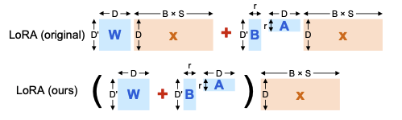

|
Amish Sethi I'm an undergraduate student at the University of Pennsylvania, currently in my junior year pursuing a Bachelor's and Master's degree in Computer Science, with an expected graduation for both in 2026. I work with Professor Mayur Naik on projects that push the boundaries of deep learning and neurosymbolic AI. My interests span neural-network optimization, scalable model compression, and integrating symbolic reasoning with neural architectures. I enjoy building efficient, interpretable systems that extend the capabilities of large language and vision models. I’m incredibly grateful to Professor Mayur Naik for his continuous support and guidance throughout my research journey. I also deeply appreciate the mentorship and inspiration from the PhD students I’ve worked closely with: Neelay Velingker, Oscar Xu, Aaditya Naik, and Jiani Huang. |
{kind=link}
News
|
ResearchI'm interested in deep learning, generative AI, and neurosymbolic AI. Most of my research focuses on optimizing large language models through efficient finetuning, quantization, and pruning, and on exploring how symbolic reasoning can be woven into neural networks for greater interpretability and control. |

|
Aaditya Naik, Jason Liu, Claire Wang, Amish Sethi, Saikat Dutta, Mayur Naik, Eric Wong ICML 2025 arXiv DOLPHIN is a novel framework combining symbolic reasoning and neural computation using CPU-GPU hybrid execution. Its execution of vectorized probabilistic computations on the GPU allows it to achieve up to 62× faster convergence than baselines across 13 benchmarks spanning text, image, and video modalities. |

|
Neelay Velingker, Amish Sethi, Jason Liu, William Dodds, Zhiqiu Xu, Saikat Dutta, Mayur Naik, Eric Wong Workshop on Efficient Systems for Foundation Models II @ ICML 2024 paper / code CLAM is a framework unifying parameter-efficient finetuning, quantization, and pruning for LLMs. It enables chaining of adapters with low overhead and high modularity, outperforming state-of-the-art methods by up to 6.5%. CLAM achieves superior trade-offs in compression and downstream performance, beating QLoRA while effectvely halving the number of active bits |
|  |
Neelay Velingker, Zhiqiu Xu, Amish Sethi, William Dodds, Mayur Naik ICLR 2025 Submission paper We provide a semantically-equivalent computation graph reformulation for LoRA and other PeFT techniques that saves memory and accelerates training. Under practical conditions, this leads to up to a 1.4× reduction in max memory usage and latency for LoRA finetuning across language and diffusion transformers, without degrading predictive performance. |

|
Andrew Ni*, Amish Sethi* (equal contribution) International Science and Engineering Fair 2020 paper This project utilized machine learning, clustering, and dimensionality reduction algorithms in |
Teaching and MentorshipIn the Fall of 2024, I served as the Head Teaching Assistant (TA) for CIS 7000: Large Language Models, the University of Pennsylvania’s first dedicated course on LLMs. The course enrolled over 120 students and covered the theory, design, training, compression, deployment, and application of large language models. As Head TA, I was responsible for:
In the Summer of 2024, I mentored five undergraduate students through the Penn Undergraduate Research Mentoring Program (PURM) on the CLAM project, focusing on efficient finetuning, quantization, and pruning. I taught these students how to conduct research in machine learning, work with LLMs, and develop scalable optimization frameworks. The students I mentored were: |
Academic Services
I served as a reviewer for the Workshop on Efficient Systems for Foundation Models II at ICML 2024.
Grant Writing
I authored a successful proposal for the Grant for Faculty Mentoring Undergraduate Research (GfFMUR), awarded by the University of Pennsylvania. This competitive grant supported undergraduate research efforts and resulted in an $8,000 award to fund mentorship and research on neurosymbolic AI.